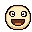
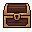

Chat
⚙
─
▢
✕
💬 Chat
🛠 Mehr
Zeitstempel
Uhrzeit vor jeder Nachricht
Abzeichen vor Namen
Mod, Abo, VIP, 7TV …
Schriftgröße
Chat-Deckkraft
weniger = Desktop scheint durch
100%
Animationen
Bewegung im Hintergrund
Diagnose
Protokoll mitschreiben
hilft bei der Fehlersuche, bleibt auf deinem PC
Diagnose-Ordner öffnen
Ausprobieren
🎁 Kiste
✨ Punkte
🚀 Raid
⭐ Abo
Spielt das Ereignis mit Beispieldaten ab.
↓ neue Nachrichten


Channel
Deine Emotes
📋